Théorie de Kirchhoff–Love, flambement et méthode de Ritz
ISAE-SUPAERO, 2e année
\(\renewcommand{\div}{\operatorname{div}}\newcommand{\bm}[1]{\boldsymbol{#1}}\newcommand{\Hess}{\operatorname{Hess}}\newcommand{\tr}{\operatorname{tr}}\newcommand{\bbR}{\mathbb{R}}\newcommand{\curl}{\operatorname{curl}}\)
Astuces : F plein écran · O vue d’ensemble · M menu · E export PDF · B tableau noir. Les encadrés Simulation sont interactifs.
| Gradient | \(\nabla f=\partial_i f\,\bm e_i\) | \(\nabla\bm v=\partial_j v_i\;\bm e_i\otimes\bm e_j\) |
| Gradient symétrisé | \(\nabla^s\bm v=\tfrac12\bigl(\nabla\bm v+(\nabla\bm v)^\top\bigr)\) | |
| Divergence | \(\div\bm v=\partial_i v_i\) | \(\div\bm T=\partial_j T_{ij}\,\bm e_i\) (par lignes) |
| Hessien, Laplacien | \(\Hess w=\nabla^s\nabla w\) | \(\Delta w=\tr(\Hess w)=\div\nabla w\) |
| Produit tensoriel | \((\bm a\otimes\bm b)\,\bm c=\bm a\,(\bm b\cdot\bm c)\) | \(\bm A:\bm B=A_{ij}B_{ij}\) |
Intégration par parties (toutes les variantes en découlent) \[ \int_{\Omega}\partial_i f\,d\Omega=\int_{\partial\Omega} f\,n_i\,d\Gamma \]
\[\div\bm\sigma+\bm f=\bm 0\]
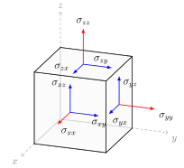
\[\bm\varepsilon=\nabla^s\bm u=\tfrac12\bigl[\nabla\bm u+(\nabla\bm u)^\top\bigr]\]
\[ \varepsilon_{xx}=\frac{\partial u_x}{\partial x},\qquad \varepsilon_{xy}=\frac12\Bigl(\frac{\partial u_x}{\partial y}+\frac{\partial u_y}{\partial x}\Bigr),\qquad \varepsilon_{xz}=\frac12\Bigl(\frac{\partial u_x}{\partial z}+\frac{\partial u_z}{\partial x}\Bigr),\ \dots \]
Un champ \(\bm\varepsilon\) dérive d’un déplacement si et seulement si \(\curl\curl\bm\varepsilon=\bm 0\) (compatibilité). Contre-exemples : défauts, dislocations, déformations résiduelles.
\[\bm\sigma=\bm{\mathcal D}\,\bm\varepsilon\qquad(\text{ordre }4)\]
Symétries de \(\mathcal D_{ijkl}\) :
Matériau isotrope
\[\bm\sigma=2\mu\,\bm\varepsilon+\lambda\tr(\bm\varepsilon)\,\bm I\]
\[ \lambda=\frac{E\nu}{(1+\nu)(1-2\nu)},\qquad \mu=\frac{E}{2(1+\nu)} \]
\(E\) : module d’Young, \(\nu\) : coefficient de Poisson
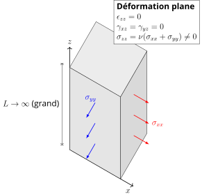
Structure très longue
\(\varepsilon_{zz}=0\), \(\sigma_{zz}\neq0\)
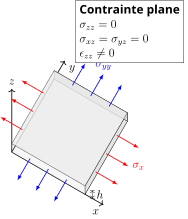
Structure très mince
\(\sigma_{zz}=0\), \(\varepsilon_{zz}\neq0\)
\(\sigma_{zz}=0 \;\Rightarrow\; \displaystyle\varepsilon_{zz}=-\frac{\nu}{1-\nu}\,(\varepsilon_{xx}+\varepsilon_{yy})\), puis on élimine \(\varepsilon_{zz}\) :
\[ \bm\sigma_{2D}=\bm{\mathcal D}_{\mathrm{ps}}(\bm\varepsilon_{2D}) =\frac{E}{1-\nu^2}\Bigl[(1-\nu)\,\bm\varepsilon_{2D}+\nu\tr(\bm\varepsilon_{2D})\,\bm I\Bigr] \]
Notation de Voigt, \(\gamma_{xy}=2\varepsilon_{xy}\) : \[ \begin{pmatrix}\sigma_{xx}\\\sigma_{yy}\\\sigma_{xy}\end{pmatrix} =\frac{E}{1-\nu^2} \begin{bmatrix}1&\nu&0\\ \nu&1&0\\ 0&0&\frac{1-\nu}{2}\end{bmatrix} \begin{pmatrix}\varepsilon_{xx}\\\varepsilon_{yy}\\\gamma_{xy}\end{pmatrix} \]
Loi utilisée par la théorie des plaques
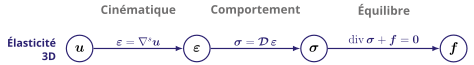
\[ \begin{alignedat}{2} \div\bm\sigma+\bm f&=\bm 0 &\quad&\text{dans }\Omega\\ \bm\sigma&=\bm{\mathcal D}\,\nabla^s\bm u &&\text{dans }\Omega\\ \bm\sigma\,\bm n&=\overline{\bm t} &&\text{sur }\Gamma_t\\ \bm u&=\bm 0 &&\text{sur }\Gamma_u \end{alignedat} \]
En déplacement (Navier) : \[(\lambda+\mu)\nabla\div\bm u+\mu\Delta\bm u+\bm f=\bm 0\]
\[ \delta J(u)[\delta u]=\left.\frac{d}{d\epsilon}J(u+\epsilon\,\delta u)\right|_{\epsilon=0} \]
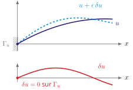
\[ \Pi(\bm u)=U-W,\qquad U=\int_\Omega\tfrac12\,\bm\varepsilon:\bm{\mathcal D}\bm\varepsilon\;d\Omega,\qquad W=\int_\Omega\bm f\cdot\bm u\,d\Omega+\int_{\Gamma_t}\overline{\bm t}\cdot\bm u\,d\Gamma \]
Principe des travaux virtuels
À l’équilibre, pour tout \(\delta\bm u\) cinématiquement admissible (\(\delta\bm u=\bm 0\) sur \(\Gamma_u\)) : \[ \delta\Pi(\bm u)[\delta\bm u] =\int_\Omega\bm\sigma:\nabla^s\delta\bm u\,d\Omega -\int_\Omega\bm f\cdot\delta\bm u\,d\Omega -\int_{\Gamma_t}\overline{\bm t}\cdot\delta\bm u\,d\Gamma=0 \]
Intégration par parties : \[ \delta\Pi=-\int_\Omega(\div\bm\sigma+\bm f)\cdot\delta\bm u\,d\Omega +\int_{\Gamma_t}(\bm\sigma\bm n-\overline{\bm t})\cdot\delta\bm u\,d\Gamma=0 \]
Lemme fondamental du calcul des variations
\(\displaystyle\int_\Omega f\,v\,d\Omega=0\quad \forall v\in C_c^\infty(\Omega)\ \Longrightarrow\ f=0\) presque partout
Conditions essentielles
\(\bm u=\bm 0\) sur \(\Gamma_u\) : imposées à l’espace \(V\)
Conditions naturelles
\(\bm\sigma\bm n=\overline{\bm t}\) sur \(\Gamma_t\) : obtenues par la variation
Objectif : ramener un problème 3D à un problème 2D sur \(\Omega\)
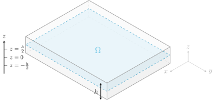
Les fibres initialement normales à la surface moyenne…
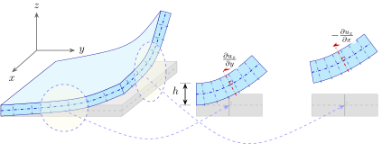
Cinématique linéaire a priori (Reddy 2006) : \(\bm u(x,y,z)=\bm u^0(x,y)+z\,\bm\theta(x,y)\)
\[ \bm u_m(x,y,z)=\bm u_m^0(x,y)-z\,\nabla w(x,y),\qquad u_z(x,y,z)=w(x,y) \]
Seules les déformations dans le plan subsistent : \[ \bm\varepsilon_{2D}=\nabla^s\bm u_m=\nabla^s\bm u_m^0-z\,\nabla^s\nabla w, \qquad \nabla^s\nabla w=\Hess w \]
\[ \bm\varepsilon_{2D}=\bm\varepsilon^0+z\,\bm\kappa,\qquad \bm\varepsilon^0=\nabla^s\bm u_m^0,\qquad \bm\kappa=-\Hess w \]
\(\bm\varepsilon^0\) : déformation de membrane, \(\bm\kappa\) : courbure \[ \bm\kappa=-\begin{pmatrix}\partial_{xx}w&\partial_{xy}w\\ \partial_{xy}w&\partial_{yy}w\end{pmatrix} \]
Loi en contrainte plane (la déformation plane serait trop rigide) : \[ \bm\sigma_{2D}=\underbrace{\bm{\mathcal D}_{\mathrm{ps}}(\bm\varepsilon^0)}_{\bm\sigma_m} +\underbrace{z\,\bm{\mathcal D}_{\mathrm{ps}}(\bm\kappa)}_{\bm\sigma_b} \]
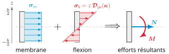
\[ \bm N=\int_{-h/2}^{h/2}\bm\sigma_{2D}\,dz,\qquad \bm M=\int_{-h/2}^{h/2}\bm\sigma_{2D}\,z\,dz \]
Membrane
\[\bm N=h\,\bm\sigma_m=\bm{\mathcal D}_m\,\bm\varepsilon^0\] \[ \begin{aligned} N_{xx}&=A(\varepsilon^0_{xx}+\nu\varepsilon^0_{yy})\\ N_{yy}&=A(\varepsilon^0_{yy}+\nu\varepsilon^0_{xx})\\ N_{xy}&=A(1-\nu)\,\varepsilon^0_{xy} \end{aligned} \]
\[A=\frac{Eh}{1-\nu^2}\]
Flexion
\[\bm M=\tfrac{h^3}{12}\,\bm{\mathcal D}_{\mathrm{ps}}(\bm\kappa)=\bm{\mathcal D}_b\,\bm\kappa\] \[ \begin{aligned} M_{xx}&=D(\kappa_{xx}+\nu\kappa_{yy})\\ M_{yy}&=D(\kappa_{yy}+\nu\kappa_{xx})\\ M_{xy}&=D(1-\nu)\,\kappa_{xy} \end{aligned} \]
\[D=\frac{Eh^3}{12(1-\nu^2)}\]
Isotrope : membrane et flexion découplées
\[ \bm Q=\begin{pmatrix}Q_x\\Q_y\end{pmatrix} =\int_{-h/2}^{h/2}\begin{pmatrix}\sigma_{zx}\\\sigma_{zy}\end{pmatrix}dz \]
Paradoxe (comme pour Euler–Bernoulli)
\(\bm Q\) n’est pas donné par une loi de comportement : il est déterminé par l’équilibre.
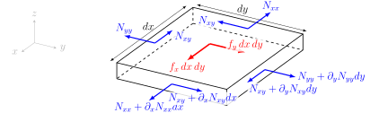
\[ \begin{aligned} \partial_x N_{xx}+\partial_y N_{xy}+f_x&=0\\ \partial_x N_{xy}+\partial_y N_{yy}+f_y&=0 \end{aligned} \]
\[\div\bm N+\bm f_m=\bm 0\]
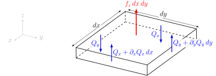
\[\partial_x Q_x+\partial_y Q_y+f_z=0\]
\[\div\bm Q+f_z=0\]
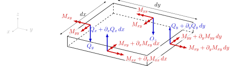
\[ \begin{aligned} Q_x&=\partial_x M_{xx}+\partial_y M_{xy}\\ Q_y&=\partial_x M_{xy}+\partial_y M_{yy} \end{aligned} \]
\[\bm Q=\div\bm M\]
\[\div\div\bm M+f_z=0\]
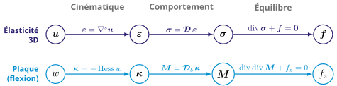
Membrane : \(\div(\bm{\mathcal D}_m\nabla^s\bm u_m^0)+\bm f_m=\bm 0\)
Flexion : \(\bm M=-\bm{\mathcal D}_b\Hess w\) dans \(\div\div\bm M+f_z=0\)
\[D\,\Delta^2 w=f_z\] \[\Delta^2=\partial_{xxxx}+2\,\partial_{xxyy}+\partial_{yyyy}\]
Extension naturelle : Reissner–Mindlin, qui autorise le cisaillement transverse (\(\bm\theta\neq-\nabla w\)).
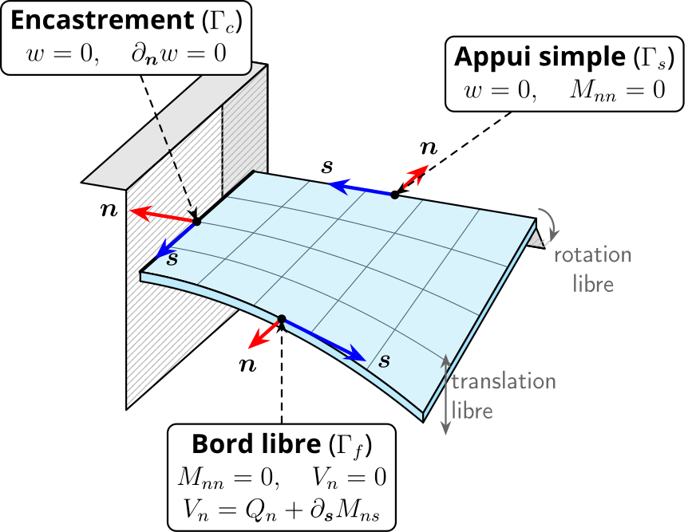
\(\partial\Omega=\Gamma_c\cup\Gamma_s\cup\Gamma_f\)
Moment de flexion
\(M_{nn}=\bm n^\top\bm M\,\bm n\)
Moment de torsion
\(M_{ns}=\bm n^\top\bm M\,\bm s\)
Effort tranchant effectif (Kirchhoff)
\[V_n=Q_n+\partial_{\bm s}M_{ns}\]
\(\bm n=\bm e_x\), \(\bm s=\bm e_y\) \(\Rightarrow\) \(M_{nn}=M_{xx}\), \(M_{ns}=M_{xy}\), \(V_x=\partial_x M_{xx}+2\,\partial_y M_{xy}\)
| Bord | Conditions | En fonction de \(w\) |
|---|---|---|
| Encastré (C) | \(w=0\), \(\partial_x w=0\) | \(w=0\), \(\partial_x w=0\) |
| Appui simple (S) | \(w=0\), \(M_{xx}=0\) | \(w=0\), \(\partial_{xx}w=0\) |
| Libre (F) | \(M_{xx}=0\), \(V_x=0\) | \(\partial_{xx}w+\nu\,\partial_{yy}w=0\), \(\;\partial_{xxx}w+(2-\nu)\,\partial_{xyy}w=0\) |
Appui simple : \(w=0\) le long du bord \(\Rightarrow\partial_{yy}w=0\). Bord \(y=\text{cste}\) : permuter \(x\) et \(y\).
\[ U=\frac12\int_\Omega\!\int_{-h/2}^{h/2}\bm\sigma_{2D}:\bm\varepsilon_{2D}\,dz\,d\Omega =\underbrace{\frac12\int_\Omega\bm N:\bm\varepsilon^0\,d\Omega}_{U_m} +\underbrace{\frac12\int_\Omega\bm M:\bm\kappa\,d\Omega}_{U_b} \]
Avec \(\bm\kappa:\bm\kappa=(\tr\bm\kappa)^2-2\det\bm\kappa\) et \(\tr(\Hess w)=\Delta w\) :
\[ U_b=\frac D2\int_\Omega\Bigl[(\Delta w)^2-2(1-\nu)\det(\Hess w)\Bigr]\,d\Omega \]
\[ \Pi_b=U_b-W_b,\qquad W_b=\int_\Omega f_z\,w\,d\Omega+\int_{\Gamma_f}\overline V_n\,w\,d\Gamma -\int_{\Gamma_s\cup\Gamma_f}\overline M_{nn}\,\partial_{\bm n}w\,d\Gamma \]
Variations admissibles : \(\delta w=0\) sur \(\Gamma_c\cup\Gamma_s\), \(\partial_{\bm n}\delta w=0\) sur \(\Gamma_c\)
\[ \delta\Pi_b=-\!\int_\Omega(\div\div\bm M+f_z)\,\delta w +\!\int_{\Gamma_f}(V_n-\overline V_n)\,\delta w -\!\int_{\Gamma_s\cup\Gamma_f}(M_{nn}-\overline M_{nn})\,\partial_{\bm n}\delta w \]
\(\delta\Pi_b=0\) pour toute variation admissible (lemme fondamental) : \[ \div\div\bm M+f_z=0\ \text{ dans }\Omega,\qquad M_{nn}=\overline M_{nn}\ \text{ sur }\Gamma_s\cup\Gamma_f,\qquad V_n=\overline V_n\ \text{ sur }\Gamma_f \]
| Essentielle (cinématique) | Naturelle (statique) | |
|---|---|---|
| \(w\) | \(\longleftrightarrow\) | \(V_n=Q_n+\partial_{\bm s}M_{ns}\) |
| \(\partial_{\bm n}w\) | \(\longleftrightarrow\) | \(M_{nn}\) |
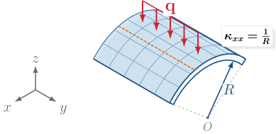
\[D\,\frac{d^4w}{dx^4}=f_z(x)\]
| Plaque | Poutre | |
|---|---|---|
| Rigidité | \(D\) | \(EI\) |
| Moment \(M_{xx}\) | \(-D\,w''\) | \(-EI\,w''\) |
| \(M_{yy}\) | \(-\nu D\,w''\) | — |
| Contraintes | 2D | 1D |
Par unité de largeur \(EI=Eh^3/12\), donc \(D/EI=1/(1-\nu^2)\approx1{,}1\) : la plaque est ≈ 10 % plus raide.
Opérateurs intrinsèques : il suffit de changer leur expression \[ \nabla w=\partial_r w\,\bm e_r+\tfrac1r\partial_\theta w\,\bm e_\theta \] \[ \div\bm Q=\tfrac1r\partial_r(rQ_r)+\tfrac1r\partial_\theta Q_\theta \] \[ \Delta w=\partial_{rr}w+\tfrac1r\partial_r w+\tfrac1{r^2}\partial_{\theta\theta}w \]
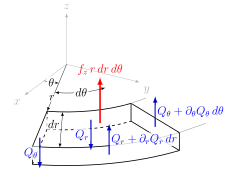
\(\partial_\theta=0\) \(\Rightarrow\) \(Q_\theta=0\), \(M_{r\theta}=0\)
\[\frac1r\frac{d}{dr}(rQ_r)+f_z=0\]
Si \(f_z\) constante : \(rQ_r=-\dfrac{r^2}{2}f_z\)
\(\times2\pi\) : bilan global des forces sur un disque de rayon \(r\)
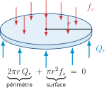
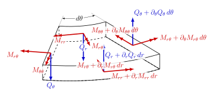
\[Q_r=\frac{M_{rr}-M_{\theta\theta}}{r}+\frac{dM_{rr}}{dr}\]
Le moment circonférentiel \(M_{\theta\theta}\) n’est pas négligeable
Courbures \[ \kappa_{rr}=-\frac{d^2w}{dr^2},\qquad \kappa_{\theta\theta}=-\frac1r\frac{dw}{dr} \] Loi de comportement \[ \begin{aligned} M_{rr}&=D(\kappa_{rr}+\nu\kappa_{\theta\theta})\\ M_{\theta\theta}&=D(\kappa_{\theta\theta}+\nu\kappa_{rr}) \end{aligned} \]
Effort tranchant \[ Q_r=-D\,\frac{d}{dr}(\Delta w),\quad \Delta=\frac1r\frac{d}{dr}\Bigl(r\frac{d}{dr}\Bigr) \] Équation de la flèche
\[ \frac Dr\frac{d}{dr}\Bigl\{r\frac{d}{dr}\Bigl[\frac1r\frac{d}{dr}\Bigl(r\frac{dw}{dr}\Bigr)\Bigr]\Bigr\}=f_z \]
\[ U_b=\pi D\!\int_0^a\!\Bigl[\bigl(w''+\tfrac1r w'\bigr)^2-2(1-\nu)\tfrac1r\,w'w''\Bigr]r\,dr \]
Cinématique de Kirchhoff–Love \[\bm u_m=\bm u_m^0-z\nabla w,\qquad u_z=w\] \[\bm\varepsilon_{2D}=\bm\varepsilon^0+z\bm\kappa,\quad\bm\kappa=-\Hess w\] Efforts généralisés \[\bm N=\bm{\mathcal D}_m\bm\varepsilon^0,\qquad \bm M=\bm{\mathcal D}_b\bm\kappa,\qquad D=\frac{Eh^3}{12(1-\nu^2)}\]
Équilibre \[\div\bm N+\bm f_m=\bm 0,\qquad \div\div\bm M+f_z=0\]
\[D\,\Delta^2w=f_z\]
Bords : \((w,\,V_n)\) et \((\partial_{\bm n}w,\,M_{nn})\)
Énergie \[U_b=\tfrac D2\!\int_\Omega\!\bigl[(\Delta w)^2-2(1-\nu)\det\Hess w\bigr]\,d\Omega\]
☕ Pause
Deuxième heure : flambement et méthode de Ritz
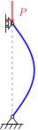
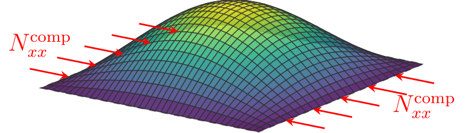
\[\bm E=\tfrac12\bigl(\nabla\bm u+\nabla\bm u^\top+\nabla\bm u^\top\nabla\bm u\bigr)\]
Tenseur de Green–Lagrange
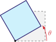
Rotation rigide d’angle \(\theta\) :
\(\bm\varepsilon=(\cos\theta-1)\,\bm I\neq\bm 0\)
\(\bm E=\bm 0\)
\[ \bm u=\begin{pmatrix}\bm u_m^0-z\nabla w\\ w\end{pmatrix} \quad\Rightarrow\quad \nabla\bm u=\begin{pmatrix}\nabla\bm u_m^0+z\bm\kappa & -\nabla w\\ \nabla w^\top & 0\end{pmatrix} \]
Composantes dans le plan : \[ \bm E_{2D}=\bm\varepsilon_{2D} +\underbrace{\tfrac12\bigl(\nabla\bm u_m^0+z\bm\kappa\bigr)^\top\bigl(\nabla\bm u_m^0+z\bm\kappa\bigr)}_{\text{déplacements dans le plan}} +\underbrace{\tfrac12\,\nabla w\otimes\nabla w}_{\text{couplage flexion / membrane}} \] \[ \nabla w\otimes\nabla w=\begin{pmatrix}(\partial_x w)^2&\partial_x w\,\partial_y w\\ \partial_x w\,\partial_y w&(\partial_y w)^2\end{pmatrix} \]
Quel terme non linéaire garder ?
Minceur \(\eta=h/L\ll1\), flèche modérée \(w\sim h\), \(\nabla\sim1/L\)
| Quantité | Ordre | |
|---|---|---|
| \(\nabla w\) | \(\eta\) | rotations modérées |
| \(\tfrac12\nabla w\otimes\nabla w\), \(z\bm\kappa\) | \(\eta^2\) | |
| \(U_b\sim L^2h\,(\eta^2)^2\) | \(L^3\eta^5\) | énergie de flexion |
| \(U_m\sim L^2h\,\xi^2\) (si \(\bm\varepsilon^0\sim\xi\)) | \(L^3\eta\,\xi^2\) | énergie de membrane |
| \(U_m\sim U_b\) \(\Rightarrow\) \(\xi\sim\eta^2\) \(\Rightarrow\) \(\nabla\bm u_m^0\) | \(\eta^2\) | |
| \(\tfrac12(\nabla\bm u_m^0+z\bm\kappa)^\top(\nabla\bm u_m^0+z\bm\kappa)\) | \(\eta^4\) | négligeable |
\[ \bm E_{2D}=\nabla^s\bm u_m^0+z\bm\kappa+\tfrac12\,\nabla w\otimes\nabla w \]
\[ \varepsilon^0_{xx}=\partial_x u_x^0+\tfrac12(\partial_x w)^2,\qquad \varepsilon^0_{yy}=\partial_y u_y^0+\tfrac12(\partial_y w)^2 \] \[ \gamma^0_{xy}=\partial_y u_x^0+\partial_x u_y^0+\partial_x w\,\partial_y w \]
La courbure \(\bm\kappa=-\Hess w\) reste linéaire
\[ \delta U=\int_\Omega\bigl(\bm N:\delta\bm\varepsilon^0+\bm M:\delta\bm\kappa\bigr)\,d\Omega, \qquad \delta\bm\kappa=-\Hess\delta w \] \[ \bm N:\delta\bm\varepsilon^0=\bm N:\nabla\delta\bm u_m^0+(\bm N\nabla w)\cdot\nabla\delta w \qquad(\bm N\text{ symétrique}) \]
Intégrations par parties, \(\delta\bm u_m^0\) et \(\delta w\) indépendantes :
\[ \begin{aligned} \div\bm N&=\bm 0 &\qquad&\text{équilibre dans le plan}\\ \div\div\bm M+\div(\bm N\nabla w)+f_z&=0 &&\text{équilibre transverse} \end{aligned} \]
soit \(-D\,\Delta^2w+\div(\bm N\nabla w)+f_z=0\)
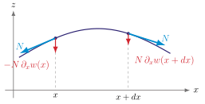
\(\bm N\) en traction : raidissement
\(\bm N\) en compression : peut vaincre la rigidité de flexion \(\to\) flambement
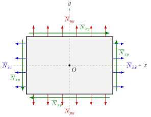
Précontrainte membranaire constante \(\overline{\bm N}\) : \[\div(\overline{\bm N}\nabla w)=\overline{\bm N}:\Hess w\] \(f_z=0\), \(\overline{\bm N}=\lambda\,\bm N_{\rm ref}\) :
\[D\,\Delta^2 w=\lambda\,\bm N_{\rm ref}:\Hess w\]
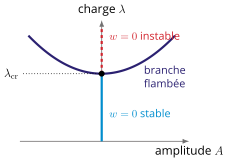
Plaques : branche post-critique stable
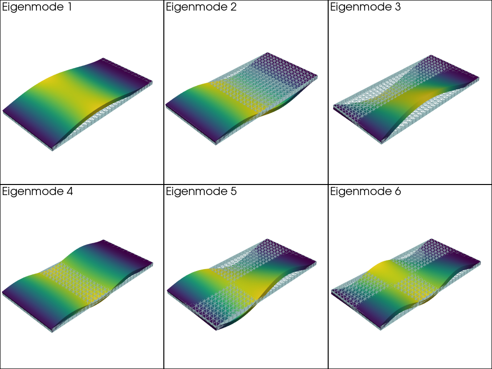
Six premiers modes (éléments finis) — J. Bleyer, COMET
\(\overline{\bm N}=-N\,\bm e_x\otimes\bm e_x\) (\(N>0\)), plaque \(a\times b\), \(\alpha=a/b\) : \(\;D\Delta^2 w=-N\,\partial_{xx}w\)
Modes exacts : \(w_{mn}=\sin\dfrac{m\pi x}{a}\,\sin\dfrac{n\pi y}{b}\) \(\Rightarrow\)
\[N_{mn}=k\,\frac{\pi^2D}{b^2},\qquad k=\Bigl(\frac m\alpha+\frac{n^2\alpha}m\Bigr)^2\]
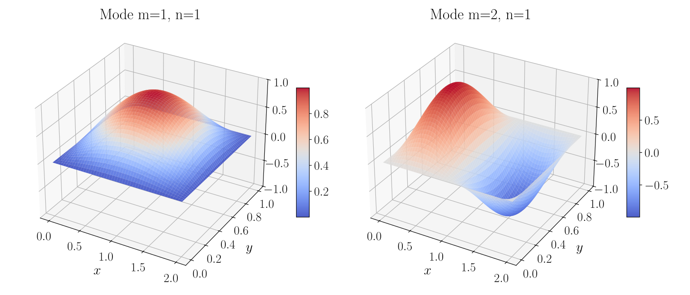
\(n=1\) : une demi-onde selon \(y\) ; \(k_{\min}=4\) pour \(\alpha\) entier ; \(m\to m+1\) demi-ondes en \(\alpha=\sqrt{m(m+1)}\). \(\alpha=2\) : mode critique \((2,1)\), \(k=4\), et non \((1,1)\), \(k=6{,}25\).
État plan \(w=0\) stable si l’énergie augmente pour toute perturbation (équivalent continu d’une hessienne définie positive) :
\[ \delta^2\Pi[0](w)=\left.\frac{d^2}{d\eta^2}\Pi(\eta\,w)\right|_{\eta=0}>0 \qquad\forall\,w\neq0 \]
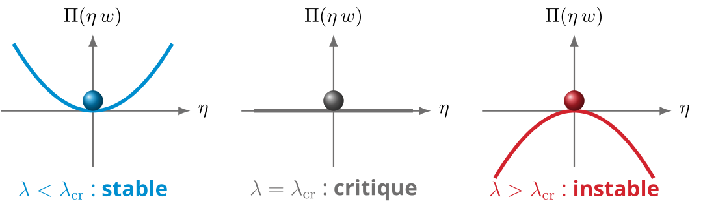
Flexion (stabilisante) \(\qquad U_b(w)=\tfrac D2\!\int_\Omega\!\bigl[(\Delta w)^2-2(1-\nu)\det\Hess w\bigr]\,d\Omega\)
Travail de la précontrainte \(\qquad W_m(w)=-\tfrac12\!\int_\Omega\!\bm N_{\rm ref}:(\nabla w\otimes\nabla w)\,d\Omega\;\) (\(W_m>0\) en compression)
Énergies quadratiques : \(\;\delta^2\Pi[0](w)=2\,U_b(w)-2\lambda\,W_m(w)\), donc stable \(\Leftrightarrow\) \(U_b(w)>\lambda\,W_m(w)\)
\[\lambda_{\rm cr}=\min_{w\neq0}\mathcal R(w),\qquad \mathcal R(w)=\frac{U_b(w)}{W_m(w)}\]
Tout \(w\) admissible : borne supérieure de \(\lambda_{\rm cr}\)
\[ \Pi(w)=\frac D2\int_\Omega\Bigl[(\Delta w)^2-2(1-\nu)\det\Hess w\Bigr]d\Omega -\int_\Omega f_z\,w\,d\Omega \]
Conditions essentielles
\(w=0\), \(\partial_{\bm n}w=0\) : à imposer aux fonctions d’essai
Conditions naturelles
\(M_{nn}=0\), \(V_n=0\) : vérifiées au sens faible
Solution approchée dans un espace de dimension finie :
\[w_N(x,y)=\sum_{i=1}^N c_i\,\varphi_i(x,y),\qquad \varphi_i\in V\]
La fonctionnelle devient une fonction de \(N\) variables : \[ \Pi(w_N)=\Pi(c_1,\dots,c_N):\bbR^N\to\bbR, \qquad \frac{\partial\Pi}{\partial c_i}=0,\quad i=1,\dots,N \]
\[ U=\frac12\sum_{i,j}c_i\,K_{ij}\,c_j,\qquad W=\sum_i c_i\,F_i \] \[ K_{ij}=D\!\int_\Omega\!\Bigl[\Delta\varphi_i\,\Delta\varphi_j -(1-\nu)\bigl(\partial_{xx}\varphi_i\,\partial_{yy}\varphi_j+\partial_{yy}\varphi_i\,\partial_{xx}\varphi_j -2\,\partial_{xy}\varphi_i\,\partial_{xy}\varphi_j\bigr)\Bigr]d\Omega \] \[ F_i=\int_\Omega f_z\,\varphi_i\,d\Omega \]
\[\mathbf K\,\mathbf c=\mathbf F\qquad\Longrightarrow\qquad w_N=\sum_i c_i\,\varphi_i\]
\(\mathbf K\) : matrice de rigidité de Ritz (symétrique)
Plaque rectangulaire \(\Omega=[0,a]\times[0,b]\) : \(\;\varphi_{mn}(x,y)=X_m(x)\,Y_n(y)\)
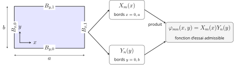
Ordre d’annulation \(r\) :
| Bord | Essentielles | \(r\) |
|---|---|---|
| S | \(w=0\) | 1 |
| C | \(w=0\), \(\partial_{\bm n}w=0\) | 2 |
| F | aucune | 0 |
\(\xi=x/a\) ; \(B_0\), \(B_1\) : bords \(0\) et \(a\)
\[g_{B_0B_1}(\xi)=\xi^{\,r(B_0)}(1-\xi)^{\,r(B_1)}\] \[X_m=g_{B_0B_1}(\xi)\,P_m(\xi)\]
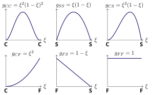
Profils \(m=0\) (\(P_0=1\))
Exemple CC–SS : \(\varphi_{mn}=\underbrace{\xi^2(1-\xi)^2\,P_m(\xi)}_{X_m}\ \underbrace{\sin(n\pi y/b)}_{Y_n}\)
Un seul terme \(w=c\,X(x)Y(y)\), charge uniforme \(p_0\) :
\[ K=D\Bigl[A_xC_y+C_xA_y+2\nu\,D_xD_y+2(1-\nu)\,B_xB_y\Bigr] \] \[ F=p_0\,S_xS_y,\qquad c=\frac FK \]
Intégrales 1D, avec \(X(x)=g(x/a)\) — aucune intégrale 2D : \[ \begin{gathered} A_x=\frac1{a^3}\!\int_0^1\!(g'')^2,\quad B_x=\frac1a\!\int_0^1\!(g')^2,\quad C_x=a\!\int_0^1\!g^2,\\ D_x=\frac1a\!\int_0^1\!gg'',\quad S_x=a\!\int_0^1\!g \end{gathered} \]
| \(g(\xi)\) | \(\int g\) | \(\int g^2\) | \(\int(g')^2\) | \(\int gg''\) | \(\int(g'')^2\) | |
|---|---|---|---|---|---|---|
| CC | \(\xi^2(1-\xi)^2\) | \(\frac1{30}\) | \(\frac1{630}\) | \(\frac2{105}\) | \(-\frac2{105}\) | \(\frac45\) |
| SS | \(\xi(1-\xi)\) | \(\frac16\) | \(\frac1{30}\) | \(\frac13\) | \(-\frac13\) | \(4\) |
| CS | \(\xi^2(1-\xi)\) | \(\frac1{12}\) | \(\frac1{105}\) | \(\frac2{15}\) | \(-\frac2{15}\) | \(4\) |
| CF | \(\xi^2\) | \(\frac13\) | \(\frac15\) | \(\frac43\) | \(\frac23\) | \(4\) |
| FS | \(1-\xi\) | \(\frac12\) | \(\frac13\) | \(1\) | \(0\) | \(0\) |
| FF | \(1\) | \(1\) | \(1\) | \(0\) | \(0\) | \(0\) |
| SS trig. | \(\sin\pi\xi\) | \(\frac2\pi\) | \(\frac12\) | \(\frac{\pi^2}2\) | \(-\frac{\pi^2}2\) | \(\frac{\pi^4}2\) |
Contrôle : si \(w=0\) sur tout le contour, \(D_xD_y=B_xB_y\) et \(\nu\) disparaît
Plaque carrée \(\Omega=[0, a]^2\), pression uniforme \(p_0\), un seul terme (\(\nu\) s’élimine) :
Enveloppe polynomiale — \(X=\xi(1-\xi)\), \(Y=\eta(1-\eta)\) \[ \frac KD=\frac{22}{45a^2}, \qquad F=\dfrac{p_0a^2}{36}, \qquad c=\dfrac{5\,p_0a^4}{88\,D} \]
Base trigonométrique — \(X=\sin(\pi x/a)\), \(Y=\sin(\pi y/a)\) \[\frac KD=\frac{\pi^4}{a^2},\qquad F=\frac{4p_0a^2}{\pi^2},\qquad c=\dfrac{4\,p_0a^4}{\pi^6 D}\]
| \(w_{\max}\;[p_0a^4/D]\) | erreur | |
|---|---|---|
| Polynomiale (\(c/16\)) | \(3{,}55\times10^{-3}\) | \(-13\,\%\) |
| Trigonométrique (\(c\)) | \(4{,}16\times10^{-3}\) | \(+2{,}4\,\%\) |
| Référence | \(4{,}06\times10^{-3}\) | — |
Attention
Ritz minimise l’énergie : la souplesse globale \(\int_\Omega f_z\,w\,d\Omega\) est sous-estimée. Une valeur ponctuelle (\(w_{\max}\)) n’est pas encadrée : cf. \(-13\,\%\) et \(+2{,}4\,\%\).
\[ U_b=\tfrac12\,\mathbf c^\top\mathbf K\,\mathbf c,\qquad \tfrac12\!\int_\Omega\!\bm N_{\rm ref}:(\nabla w\otimes\nabla w)=\tfrac12\,\mathbf c^\top\mathbf K_G\,\mathbf c \] \[ K_{G,ij}=\int_\Omega\bm N_{\rm ref}:(\nabla\varphi_i\otimes\nabla\varphi_j)\,d\Omega \]
\[ \lambda(\mathbf c)=-\frac{\mathbf c^\top\mathbf K\,\mathbf c}{\mathbf c^\top\mathbf K_G\,\mathbf c} \quad\Longrightarrow\quad \mathbf K\,\mathbf c=-\lambda\,\mathbf K_G\,\mathbf c \]
Problème aux valeurs propres généralisé
Plaque carrée, \(\overline{\bm N}=-N\,\bm e_x\otimes\bm e_x\) \(\Rightarrow\) \(W_m=\tfrac12\int_\Omega(\partial_x w)^2=\tfrac12\,c^2\,B_xC_y\)
Enveloppe \(\xi(1-\xi)\,\eta(1-\eta)\) \[ N_{\rm cr}\approx\frac{K}{B_xC_y} =\frac{22/45}{1/90}\,\frac D{a^2} =44\,\frac D{a^2} \]
Sinus \(\sin(\pi x/a)\sin(\pi y/a)\) \[ N_{\rm cr}=\frac{\pi^4}{\pi^2/4}\,\frac D{a^2}=4\pi^2\frac D{a^2} \] exact (c’est le mode)
\[ 44\,\frac D{a^2}\ \geq\ 4\pi^2\frac D{a^2}\approx39{,}5\,\frac D{a^2} \qquad(+11{,}5\,\%) \]
Mêmes intégrales que pour la flexion
\(\lambda_{\min}^{\text{approchée}}\geq\lambda_{\rm cr}^{\text{exacte}}\) : base restreinte = rigidité artificielle, convergence monotone. Paliers à 4 et 16 fonctions : les termes impairs n’enrichissent pas le mode symétrique.
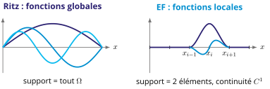
von Kármán \[\bm\varepsilon^0=\nabla^s\bm u_m^0+\tfrac12\nabla w\otimes\nabla w\] \[-D\Delta^2w+\div(\bm N\nabla w)+f_z=0\] Flambement linéarisé \[D\Delta^2w=\lambda\,\bm N_{\rm ref}:\Hess w\]
\[\lambda_{\rm cr}=\min_{w\neq0}\frac{U_b(w)}{W_m(w)}\]
Ritz \[w_N=\sum c_i\varphi_i,\qquad\varphi_i\in V\] \[\mathbf K\mathbf c=\mathbf F,\qquad \mathbf K\mathbf c=-\lambda\,\mathbf K_G\mathbf c\] Plaque rectangulaire \[\varphi_{mn}=X_mY_n,\quad X_m=g_{B_0B_1}P_m\] Garanties
Souplesse sous-estimée, \(\lambda_{\rm cr}\) surestimée
À vous de jouer : PC 1 · Solutions analytiques · PC 2 · Méthodes énergétiques · Laboratoire interactif
Structures minces — plaques · A. Brugnoli · ISAE-SUPAERO